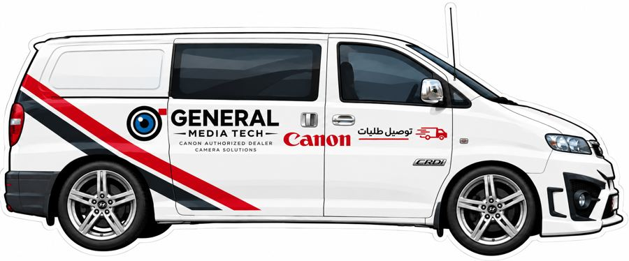

أهلاً بكم
شكراً لثقتكم – شركة General Media Tech
نظام التتبع الذكي
تتبع شحنتك على مدار اللحظة
أدخل رقم الشحنة أو الجوال
الرقم المدخل غير صحيح!
جارٍ تتبع شحنتكم...
اسم المستلم
المبلغ الإجمالي
📦 المنتج المطلوب
🔖 رقم التتبع
🚚 شركة الشحن
—
📍 وجهة الشحنة
—
💬 تواصل بخصوص استلام شحنتي
⏱️ الوصول المتوقّع
🧾 عرض إيصال الشحن
أماكن الاستلام
من نحن
موقعنا الإلكتروني
وكلاؤنا